Student Notebook: final reference and N1 shell
October 25, 2026 · Isolated presentation verification
The final corrected prototype is authoritative. These are provisional component comparisons, not full application visual acceptance. The actual shell is rendered with fictional test content, an intentional recovery notice and a stateful test input. The real StudySession is not mounted.
Tested source: 1a5efc2f92001c616fabad597344e84cf707d932
N0 contract: 8bca4d3554ae02a909b93f1a7b95ed033b62a718
Reference ZIP SHA-256:
fa69c2d0262b0be684b5e9d21b2131d7c02a5bf9577c1586df07950c6394c570
Reference images use Main.dc.html in a responsive viewing wrapper. External fonts were blocked. Open an image for its original pixels. Read the passed, failed and unrun checks and integration guide for scope and remaining differences.
1440 × 1000

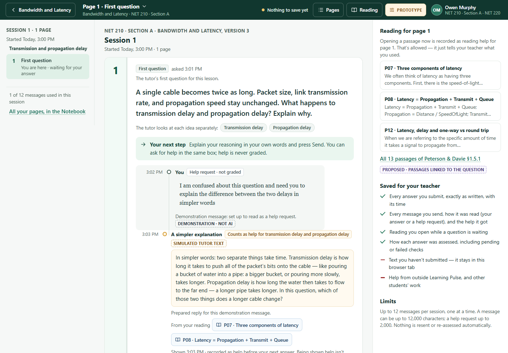

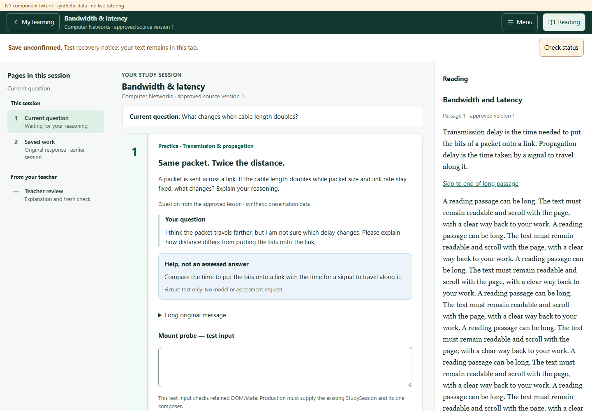
1024 × 768

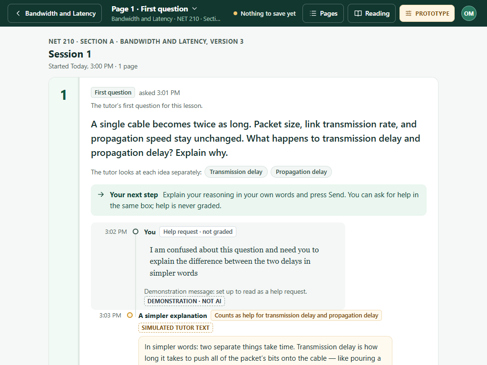

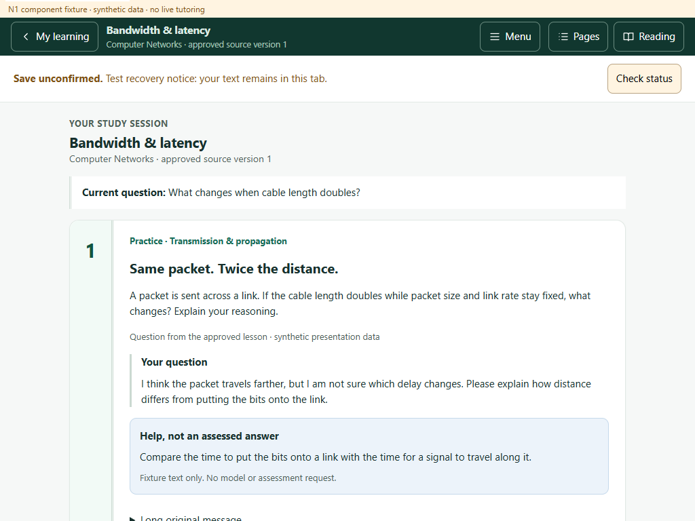
390 × 844

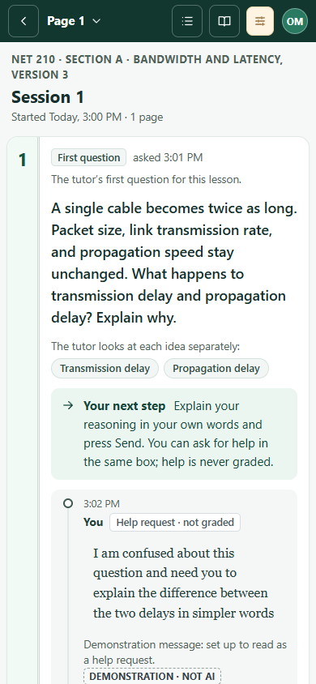

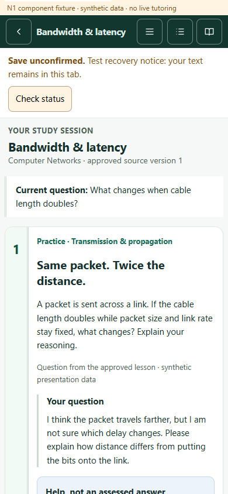
320 × 844

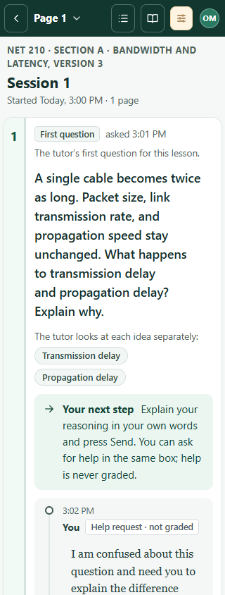

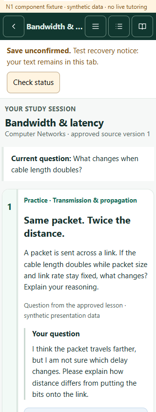
Corrected help-request reference
Unmodified V1440-HelpMsg.dc.html. N1 supplies presentation regions; PR #113 retains the actual composer, help-versus-answer handling, scrolling and recovery. Teacher-approved activity content remains authoritative.
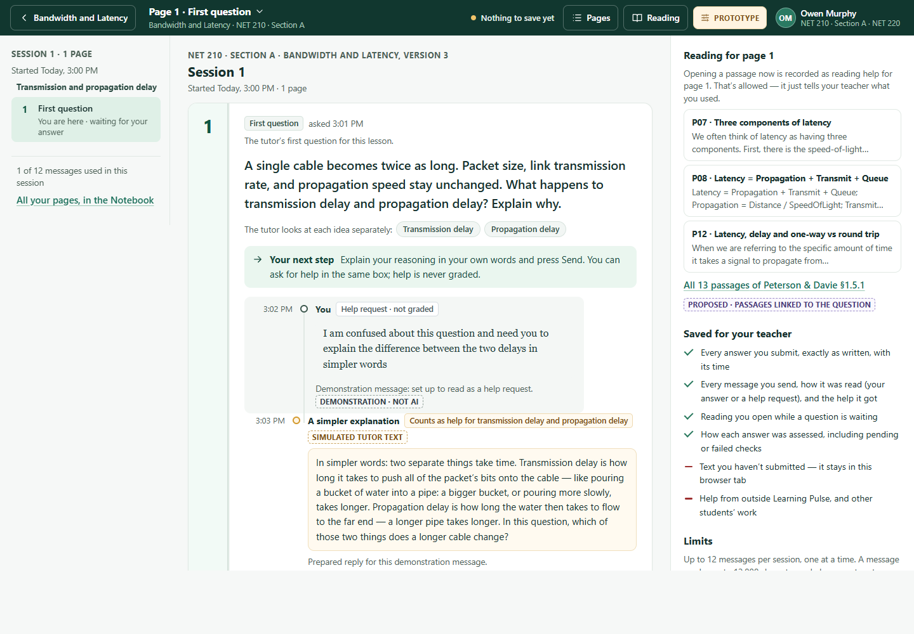
Native browser zoom
Fresh headed Edge profiles at native 100% and 200%. Browser measurements confirm DPR 1 → 2 and viewport 1416 × 1008 → 708 × 504. This is not CSS zoom or mobile emulation. These captures show the test input scrolled into view.

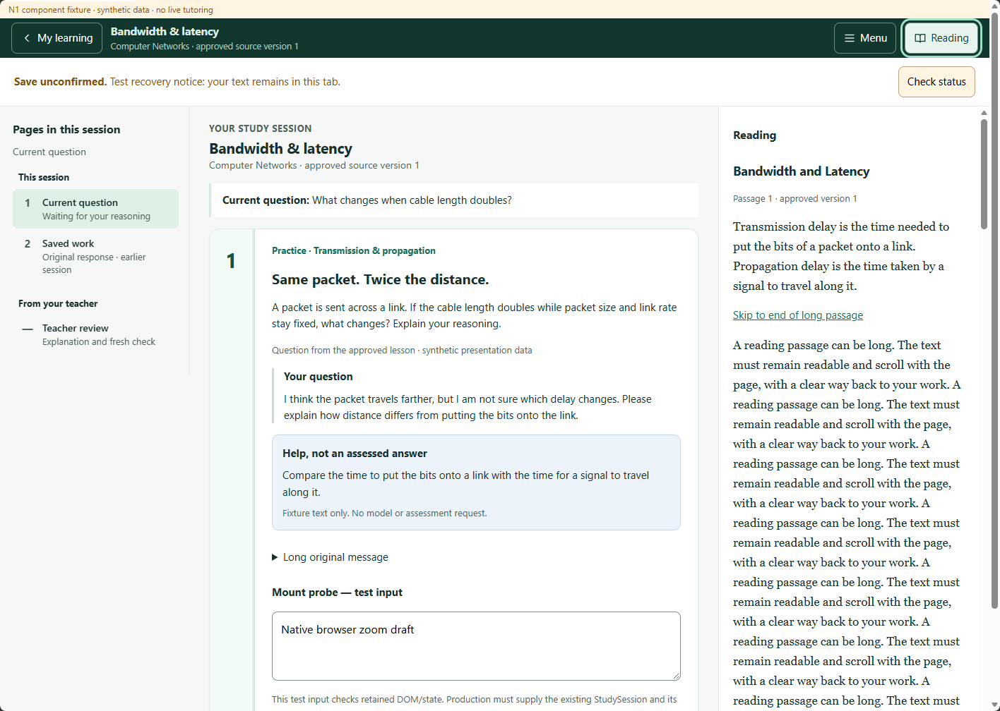

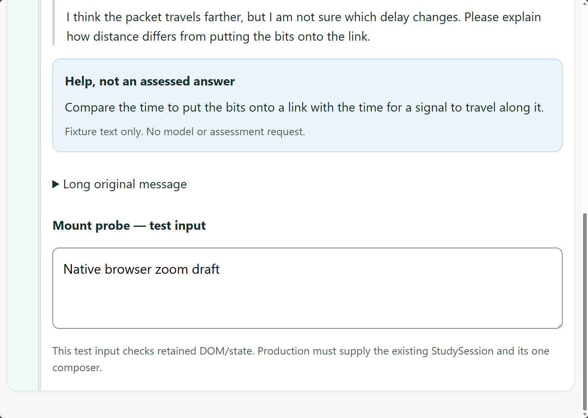
Remaining integration review
Review supplied title/question context, account actions, reading cards, teacher activities and real conversation content together when N2–N5 mount. N1 adds a Menu control for shared student navigation. The fixture's long passage and recovery notice intentionally differ from the prototype. Verify real PR #113 notices, scroll ownership and composer space in that host, including a native mobile keyboard and screen reader.